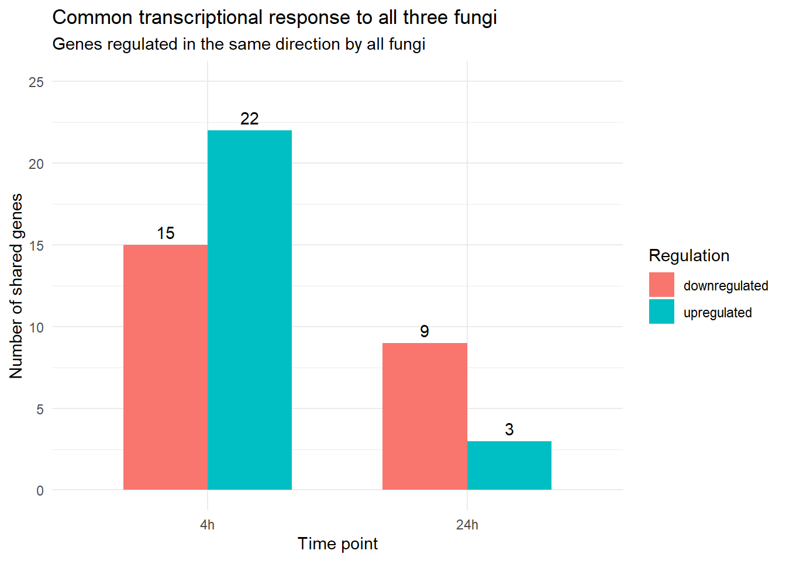
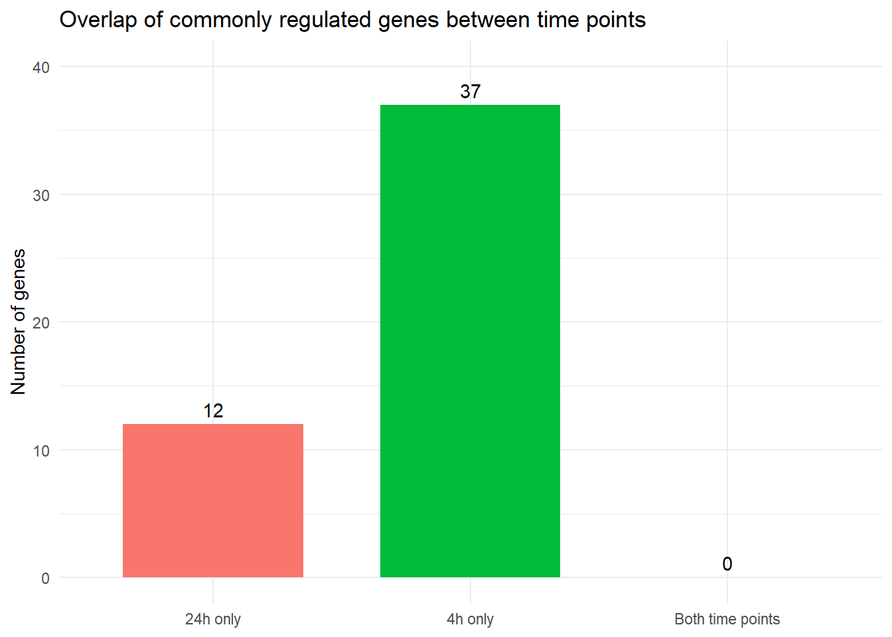

Comparison of gene expression responses to three fungal species
This analysis focuses on how gene expression changes following stimulation with three different fungal species: Candida albicans, Aspergillus fumigatus and Rhizopus oryzae. The aim is to identify and compare the genes that are significantly upregulated or downregulated after fungal stimulation compared with the RPMI control group, while also taking into account differences between donors.
The analysis considers two time points, 4 h and 24 h, to see how the responses change over time. First, the individual responses to each fungal species are analysed and compared using different plots to explore the magnitude and direction of gene expression changes.
In the second part, the focus shifts to identifying genes that are commonly upregulated or downregulated by all three fungi at each time point. Finally, the overlap between 4 h and 24 h is investigated to determine whether the same genes are commonly regulated at both time points. This allows us to explore both the differences between the fungal responses and the genes that may be involved in a shared response to fungal stimulation.
1. Initialization
Load the packages required for data manipulation, statistical modelling and plotting.
library(tidyverse)
── Attaching core tidyverse packages ──────────────────────── tidyverse 2.0.0 ──
✔ dplyr 1.2.1 ✔ readr 2.2.0
✔ forcats 1.0.1 ✔ stringr 1.6.0
✔ ggplot2 4.0.4 ✔ tibble 3.3.1
✔ lubridate 1.9.5 ✔ tidyr 1.3.2
✔ purrr 1.2.2
── Conflicts ────────────────────────────────────────── tidyverse_conflicts() ──
✖ dplyr::filter() masks stats::filter()
✖ dplyr::lag() masks stats::lag()
ℹ Use the conflicted package (<http://conflicted.r-lib.org/>) to force all conflicts to become errors
library(broom)library(purrr)library(ggrepel)
Loading the files required for this analysis:
counts <-read_csv("../data/counts.csv")
Rows: 61893 Columns: 64
── Column specification ────────────────────────────────────────────────────────
Delimiter: ","
chr (1): gene_id
dbl (63): 140516_SN163_0555_AC3VYAACXX_L1_GCCAAT, 140424_SN163_0548_AC3TJNAC...
ℹ Use `spec()` to retrieve the full column specification for this data.
ℹ Specify the column types or set `show_col_types = FALSE` to quiet this message.
metadata <-read_csv("../data/metadata.csv")
Rows: 63 Columns: 4
── Column specification ────────────────────────────────────────────────────────
Delimiter: ","
chr (4): sample_id, time, stimulus, donor
ℹ Use `spec()` to retrieve the full column specification for this data.
ℹ Specify the column types or set `show_col_types = FALSE` to quiet this message.
1) Removing genes with zero counts in every sample
Remove genes that have no reads in any sample, since they do not provide information for the expression analysis.
First of all, calculate the total number of counts for each gene across all samples (no need to covert any value as they already are <dbl> = double, numeric values)
And then count how many genes have zero counts across all samples.
counts |>filter(total_counts ==0) |>nrow()
[1] 18942
We find out that 18942 genes have 0 counts out of 61893.
Then it becomes possible to remove such genes with zero total counts and discard the temporary column used for filtering. And also check the dimensions of the filtered dataset to see how many genes and sample columns remain:
After this first extra cleaning step, 42951 genes remain, each analysed in 64 different conditions.
2) Identify upregulated and downregulated genes
In the second part of the “initialization” step, we are interested in normalizing the raw counts and reorganizing the data into a tidy format combined with sample metadata for further analysis.
3a. Normalising and transforming the counts
Convert raw counts into a normalised expression measure that can be used for exploratory analysis.
We use counts per million (CPM), followed by a log2 transformation. Adding 1 prevents taking the logarithm of zero:
Each sample is currently represented by a separate column. We reshape the table into long format, so that each row represents the expression of one gene in one sample.
3c. Combining expression values with sample metadata
Finally, we combine the gene expression and the metadata.
expression_data <- counts_long |>left_join(metadata, by ="sample_id")
So now the table is tidy and it’s possible to continue with the analysis.
3d. Preparing the data for statistical modelling
We want to identify statistically significative genes whose expression changes following fungal stimulation compared with the control condition.
The control group is used as the reference category. This means that the estimated effect of each fungal stimulus represents its expression change relative to the control.
Moreover, donor is also included as a categorical variable to account for differences in baseline gene expression between individuals.
expression_all_time_points <- expression_data |>mutate(stimulus =fct_relevel( # set RPMI control as referenceas_factor(stimulus),"Control_group" ),donor =as_factor(donor) # convert donors into discrete experimental grouping variable )
3e. Fitting linear models
We want to estimate the effect of each fungal stimulus on gene expression (relative to the control) while accounting for donor-to-donor variation (for differences in baseline expression between donors). One of the assumptions of our model is that the fungal stimulation effect is broadly consistent across donors.
We fit a separate linear model for each gene at each time point,
…and combine the results into a single table, retaining the gene identifier, time point and statistics.
results_all <- expression_all_nested |>select(gene_id, time, model_results) |>unnest(model_results)
We want to retain only the coefficients associated with fungal stimulation. The donor coefficients are not needed for the subsequent analysis, so we do not select it.
We now want to investigate whether the baseline expression of a gene under control conditions is related to its estimated response to fungal stimulation.
First, we calculate the mean expression of each gene in the control samples, separately for each time point.
`summarise()` has regrouped the output.
ℹ Summaries were computed grouped by gene_id and time.
ℹ Output is grouped by gene_id.
ℹ Use `summarise(.groups = "drop_last")` to silence this message.
ℹ Use `summarise(.by = c(gene_id, time))` for per-operation grouping
(`?dplyr::dplyr_by`) instead.
Then we combine the control expression values with the estimated effects obtained from the linear models.
Each point represents one gene-fungus comparison at one time point.
Points above zero indicate genes with higher estimated expression following fungal stimulation than under control conditions, while points below zero indicate genes with lower estimated expression following fungal stimulation than under control conditions.
In particular:
X-axis: mean expression under control conditions (“How much the gene was expressed under control conditions?”).
Y-axis: estimated expression change following fungal stimulation (“How much the gene expression changed following fungal stimulation?”)
Positive estimates indicate increased expression relative to control.
Negative estimates indicate decreased expression relative to control.
Interpretation:
From the scatter plot, we can see a clear wedge shape at both 4h and 24h: genes with lower baseline expression in the control group show much bigger changes when stimulated, while highly expressed genes stay pretty close to zero. There is also an empty white gap right around zero, which makes sense because we filtered the data to only include statistically significant genes.
When comparing the different fungi, C. albicans (green) mostly drives strong upregulation that gets even stronger after 24 hours. On the other hand, R. oryzae (blue) stands out for downregulating genes, where the biggest drops happen in genes with medium baseline expression before leveling back out at higher expression levels. Finally, A. fumigatus (red) has way fewer points on the plot, suggesting it triggers a much smaller response compared to the other two fungi. In general, we can confirm that transcriptional responses differ between fungal species.
4b. Comparing the distribution of effect sizes
We also want to compare the distribution of estimated expression changes between the three fungal stimuli at each time point. Here we are answering: “How are the estimated expression changes distributed among statistically significant genes, and how do these distributions differ between fungal species?”
The density curves show how the estimated effect sizes are distributed among statistically significant genes:
In the plot, positive values represent increased expression relative to the control, whereas negative values represent decreased expression. The position and shape of each density curve indicate whether the estimated effects are predominantly positive or negative, and whether they are concentrated around a particular effect size or spread across a wider range.
Interpretation
The density plots show that each fungus has a pretty distinct transcriptional signature. For example, for A. fumigatus, there’s a noticeable shift over time: at 4h its significant genes are tightly grouped around -0.5 (log2 fold change), but by 24h the distribution flattens a bit out and moves toward positive effect sizes with a small peak around +1. On the other hand, C. albicans and R. oryzae look pretty stable between the two time points, just spreading out slightly without changing their overall shape.
4c. Comparing the proportions of upregulated and downregulated genes
We also want to compare the relative contribution of each fungal stimulus to the number of significantly upregulated and downregulated genes.
First, we count the distinct genes in each combination of time point, regulation direction and fungal stimulus. Genes classified as not strongly regulated are excluded.
`summarise()` has regrouped the output.
ℹ Summaries were computed grouped by time, regulation, and stimulus.
ℹ Output is grouped by time and regulation.
ℹ Use `summarise(.groups = "drop_last")` to silence this message.
ℹ Use `summarise(.by = c(time, regulation, stimulus))` for per-operation
grouping (`?dplyr::dplyr_by`) instead.
In it, each bar represents 100% of the significantly regulated genes for each time point and regulation category (upregulated or downregulated) and the different colours show the proportion of genes associated with each fungal stimulus. We added the numbers inside the bars to indicate the actual number of genes for each stimulus, making it possible to compare both the relative proportions and the total number of genes.
In general from this graph, it clearly appears how many more genes showed a significant expression change following R. oryzae stimulation compared to the other fungi, with the exception of the upregulated genes at 24h, for which C. albicans seems to induce an higher expression.
5. Identifying genes shared by all three fungi
We want to identify genes that are significantly regulated in the same direction by all three fungal stimuli at a given time point, similarly to what appears in the paper.
For this part of the analysis we retain only upregulated and downregulated genes, then group the results by gene, time point and regulation direction. A gene is considered shared when it appears in all three fungal conditions:
`summarise()` has regrouped the output.
ℹ Summaries were computed grouped by time and regulation.
ℹ Output is grouped by time.
ℹ Use `summarise(.groups = "drop_last")` to silence this message.
ℹ Use `summarise(.by = c(time, regulation))` for per-operation grouping
(`?dplyr::dplyr_by`) instead.
So that in becomes possible to visualise the number of shared upregulated and downregulated genes at 4h and 24h:
ggplot( shared_counts,aes(x = time,y = n_genes,fill = regulation )) +geom_col(position ="dodge", width =0.65) +ylim(0, 25) +geom_text(aes(label = n_genes),position =position_dodge(width =0.65),vjust =-0.5 ) +scale_x_discrete(limits =c("4h", "24h")) +labs(title ="Common transcriptional response to all three fungi",subtitle ="Genes regulated in the same direction by all fungi",x ="Time point",y ="Number of shared genes",fill ="Regulation" ) +theme_minimal()

5b. Comparing shared genes between time points
Determine whether the genes commonly regulated by all three fungi at 4h are also commonly regulated at 24h.
First, we need to extract the unique upregulated genes at each time point.
We can finally combine the common and distinct gene into one table showing how many genes are actually unique to 4h and to 24h, or shared between both time points.
# A tibble: 3 × 2
n_genes category
<int> <chr>
1 37 4h only
2 0 Both time points
3 12 24h only
We plotted these results in a simple bar plot:
ggplot(time_overlap, aes(x = category, y = n_genes, fill = category)) +geom_col(width =0.7) +ylim(0,40) +geom_text(aes(label = n_genes), vjust =-0.5) +labs(title ="Overlap of commonly regulated genes between time points",x =NULL,y ="Number of genes" ) +theme_minimal() +theme(legend.position ="none")

6. Volcano plot of the shared genes
As an extra analysis, we also decided to visualise the estimated expression changes and adjusted p-values of genes shared upregulated or downregulated by all three fungi in a volcano plot.
We first retrieve the adjusted p-values from the original model results and combine them with the shared-gene information
Finally, we can create a volcano plot in which each point represents one shared gene in one fungal condition at one time point:
ggplot( volcano_data,aes(x = estimate,y =-log10(q.value),color = regulation,label = gene_id )) +geom_point(size =2, alpha =0.7) +facet_grid(time ~ stimulus) +scale_color_manual(values =c("upregulated"="forestgreen","downregulated"="blue" ) ) +labs(title ="Volcano plot of the common transcriptional response",subtitle ="Genes significantly regulated in the same direction by all three fungi",x ="Estimated expression change",y ="-log10(adjusted p-value)",color ="Regulation" ) +theme_minimal()